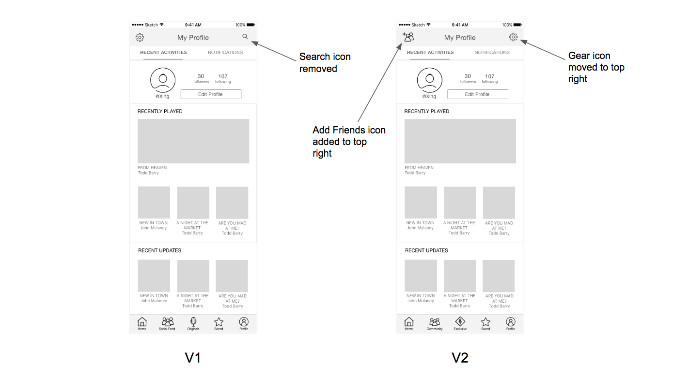

The final deliverable screens.
Project Intro
Laugh.ly is a mobile app that provides on-demand comedy content from the largest library of comedy content. It currently has 100,000 active users a month.
I and a team of 4 other designers were tasked to 1) improve the navigation and 2) rethink the information architecture of the app. The client also informed us that they were pushing for social features, such as commenting and sharing of content, and asked us to vet its value through our research.
I played an active role in every phase of the design process and had specific ownership of the "Social Feed"/"Community" screen in implementing it in low and high fidelity, assuring that it aligned to the overall brand style and grid system.
Currently, the app looks like this:
The Process
To inform our design decisions, we followed the iterative process below:
RESEARCH AND UX METHODOLOGY
First, we conducted an audit of all the different types of content within the app.
We then conducted card sorting exercises with 5 participants. We used the results to determine how users thought about and grouped different kinds of content and mapped those findings into a matrix.
From that data, we created two versions of reordering the content hierarchy. We still weren't confident in making decisions between choices such as pulling out "Favorites" as its own tab or nesting it under "Profile".
To help us decide and determine how discoverable content is in each version, we created a tree testing exercise, nesting and grouping content according to each hierarchy.

These two types of exercises helped us restructure the information architecture. Card sorting allowed us to identify the most natural and intuitive groups and their labels, while tree testing helped us hone in and on and refine a subset of groups that we would use for our redesign.
RESEARCH FINDINGS AND IDEATION
Through both exercises, we deduced that version 2 best fit the users' mental models.
Below is a summary of our largest findings from the card sorting and tree testing exercises.
Then, we rapidly produced sketches of different ideas and voted as a group for the most viable solutions to make low fidelity mockups of.
Lo-Fi Phase
LO-FI PROTOTYPE
We created a low fidelity prototype for the first round of validation of our design decisions. We tested this with 5 different users. We asked them scenario questions that we drafted specifically to avoid influencing users in order to get the most intuitive and organic reactions.
LO-FI VALIDATION FINDINGS
Through our usability testing, we found that users generally had an easy time finding most of the content that we prompted them through scenarios with. Content that users had the most trouble finding were:
1) Find and follow a friend. 4 out of 5 users thought to go to the "Social Feed" tab, expecting to do all things social there. In addition, 2 users thought that the search function was specific to each page, rather than being a global search. Our Solution: Include an "Add Friend" icon to the "Profile" page to make the function more explicity and discoverable.
2) Finding list of followers. A majority of users expected to find followers in the "Social Feed" page. Our Solution: Rename "Social Feed" to "Community" to enforce that the page houses a feed of friends' activities, rather than social-related functions.
3) Finding the live stream feature. Despite eventually finding it, a majority of users hesitated and had to think relatively longer about where they might live streaming content in the app. Our Solution: Change "Originals" page label to "Exclusive" to denote, more explicitly, a page where one can find content not found anywhere else but on Laugh.ly.
Hi-Fi Phase
HI-FI PROTOTYPE
After we finalized a majority of the aspects from our lo-fi validation testing, we created a high fidelity mockup to test behavior that was more based on visuals, like browsing for content, as well as other flows that couldn't be as thoroughly tested in lo-fi.
Since social features will be a large part of the next version of the app the client is pushing out, they asked for us to test how users responded to first landing on "News Feed", a feed of activity of the user and their followed friends. They also asked us to include users' own activities on the "News Feed" page. However, we believed that users would find more value in being brought straight to suggested content on the "Explore" and "Radio" pages. Thus, we created two versions of a prototype, 1) one version with the home page being "News Feed", and 2) one version with the home page being the "Explore" page.
We tested the hi-fi prototype with another 5 users each, for a total of 10 users. We prompted users with the same scenarios from our lo-fi validation testing, with additional questions around how they choose content to listen to and how much they are influenced by social stats.
HI-FI VALIDATION FINDINGS
In our second round of usability testing, we found that most of the problems users encountered in our lo-fi prototype were alleviated by solutions in our hi-fi prototype. However, there were still a few points users had trouble with:
1) Finding recently played content. Most users navigated to "Profile" when searching for their own recently played content. This was inline with our hypothesis that it isn't intuitive for users to group their own activity with their friend's activity on the same page. Our Solution: Move recently played content to the "Profile" page.
2) Finding offline saved content. Some users thought of offline saved content as exclusive content while others completely missed it while searching through the "Saved" content page. We believed that users ignored the carousel-styling of the offline saved content, as many of lists of content are styled similarly throughout the app. Our Solution: Set default screen to "Saved", rather than "Notifications", increasing discoverability of offline saved content.
3) Confused why page of friends' activities is the home screen. Specific to version 1, in which "News Feed" is the home screen, users reported feeling overwhelmed with notifications and not caring to see what their friends' activities were. Our Solution: This confirmed our hypothesis that users would value "Explore" as home screen, which we implemented in version 2.
The Solution
We presented the client with all of our research findings, usability testing results, and our final hi fidelity prototype. We also provided further suggestions in response to our final round of testing with users. Overall, the client was incredibly happy with our work and was excited to start implementing in the next version release.
Check out the working prototype below!
Thoughts for the Future
I really appreciate the chance to work on such a fun app and affect a large number of active users! My main takeaways from this project were:
1) How and when to use the right UX methods. After previously reading about a great number of UX methods such as card sorting and persona creation, this project made great use of the card sorting and tree testing methods and helped me understand the right contexts to use each and how to draw useful conclusions from them.
2) How to choose patterns within an existing style. A big challenge in this project was to find innovative patterns to house content in which also didn't deviate too far from the existing patterns used in the app. I feel that my team and I were successful in introducing new patterns and altering existing ones appropriately.